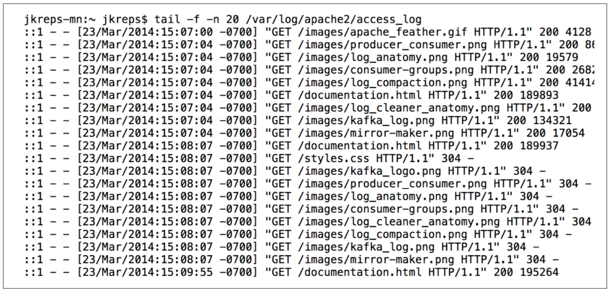
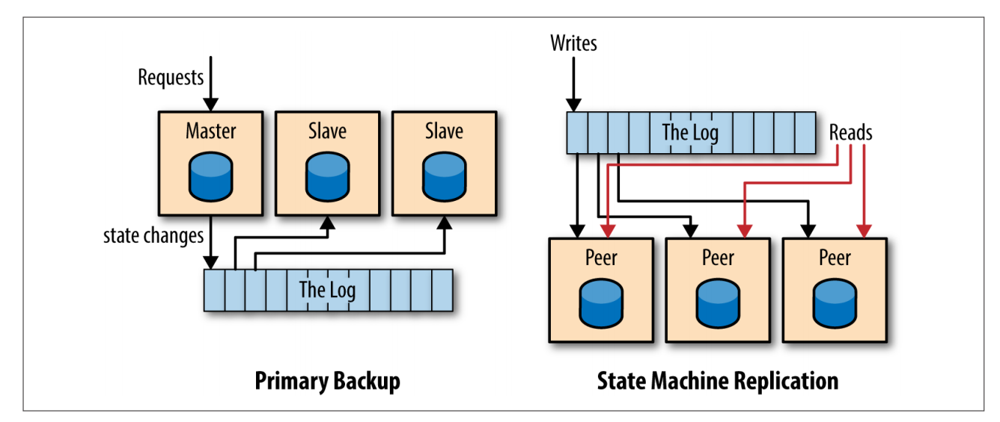

导言
什么是 Log ?
常见 log

a series of loosely structured requests, errors, or other messages in a sequence of rotating text files
包含一连串松散结构（即强制结构）的请求，错误或其他信息的文本文件
随着越来越多的服务或机器使用 log, log 逐渐被用于快速查询和图表化显示不同机器的行为，这时候英语不是很适用于结构化日志。
这里要讨论的日志更接近于 commit log 或 journal，一种以时间排序，只追加的序列化记录。

日志以写入顺序从0开始标记, 每个记录都有一个唯一标记；从左向右读，记录格式可以是普通文本，也可以是二进制数据。
A log is not all that different from a file or a table. A file is an array of bytes, a table is an array of records, and a log is really just a kind of table or file where the records are sorted by time.
However, it is important that we think about the log as an abstract data structure, not a text file.
The answer is that logs have a specific purpose: they record what happened and when. For distributed data systems this is, in many ways, the very heart of the problem.
数据库中的 Log
数据库系统在很早之前就使用 log, 数据库向 log 写入数据库中各种记录变更信息，用于在不同备份之前同步数据，且由于 log 会被立即持久化，log 被用于数据库灾备恢复。
数据库 log 两个主要作用
- 在发布/消费模式下向其他副本传输数据
- 保证不同副本间变更一致性的机制
分布式系统中的 Log
分布式系统的一个基础问题是数据一致性原则，根据“状态机复制原则(state machine replication principle)”
If two identical, deterministic processes begin in the same state and get the same inputs in the same order, they will produce the same output and end in the same state.
即如果两个相同的状态机以相同的状态开始，以相同的顺序获取相同输入，那么他们将会产生相同输出并停止于相同状态。
Deterministic 要求系统非时间依赖且不会让其他外界输入影响结果。例如一个基于 gettimeofday() 函数做决定的程序就不是一个 Deterministic 程序。
如果能保证状态机相同且处于相同起始状态，只要我们向两个状态机以同样顺序输入相同数据，那我们就能保证两个状态机完全一致。
log 正是“相同顺序相同输入”的保证。
以 Log 为中心设计的多样性
根据 log 内容，以 log 为中心的设计可以有多种应用方式。比如记录服务的请求并让其他副本独立地处理这些请求，或者记录请求导致的数据变化，甚至记录处理请求的 x86 指令集。
物理或基于行的记录代表记录每个变化行的内容，逻辑或命令式记录代表记录导致记录变化的 SQL 语句。
分布式系统常见两种复制模式

-
主备模式，由一个推选而来的主节处理所有请求，并将这些请求按顺序写入 log，其他副本应用 log 中的状态变化以便和主节点同步。
-
状态机模式(或多主模式), 每个节点都是对等的，写入请求首先会被写入 log 然后所有节点根据 log 中顺序依次应用这些写入请求。
例子
TODO 写完例子
Log 和共识
The log will become something of a commoditized interface, with many algorithms and implementations competing to provide the best guarantees and optimal performance